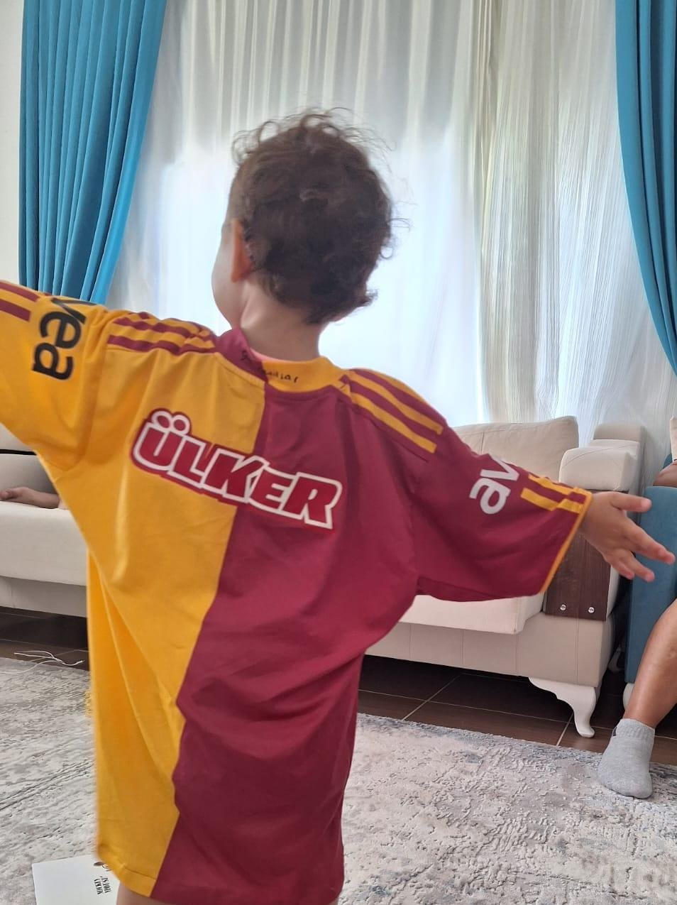
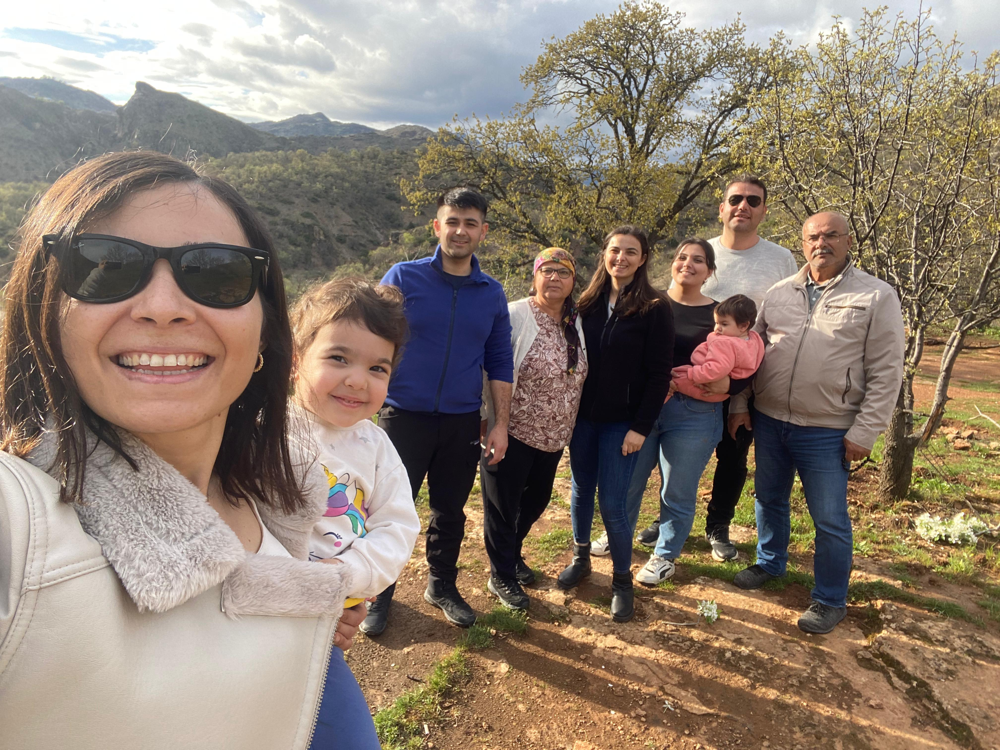
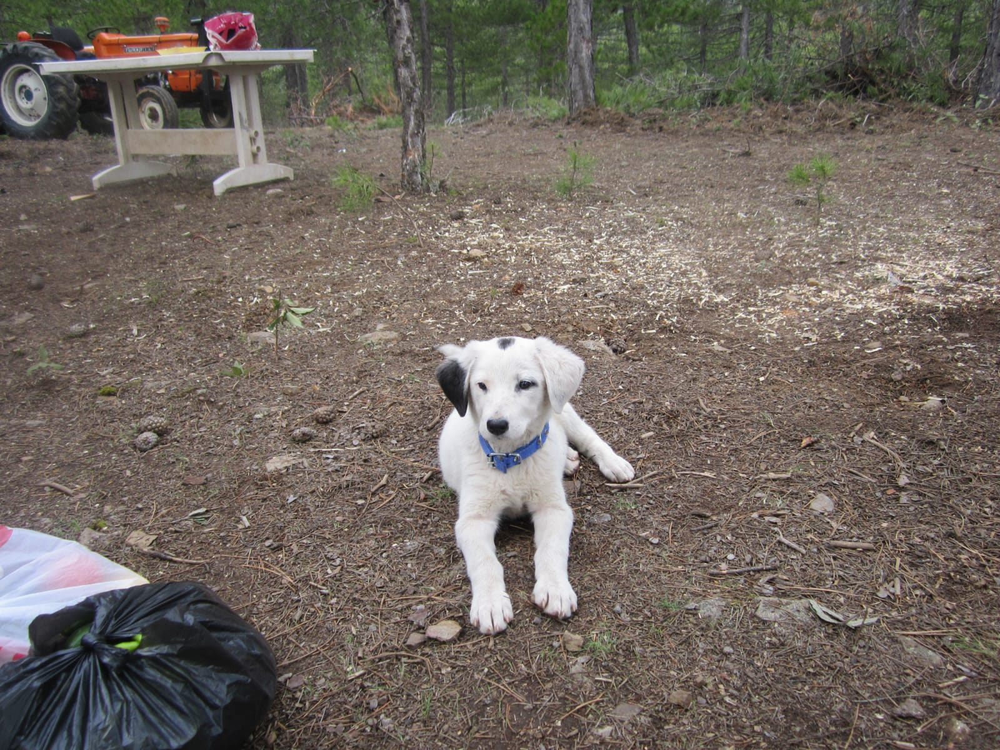
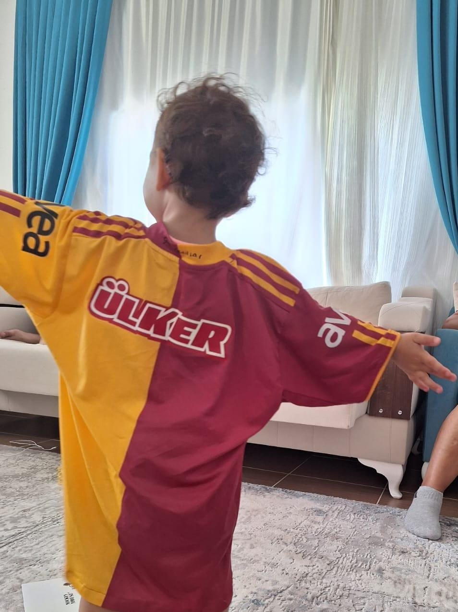
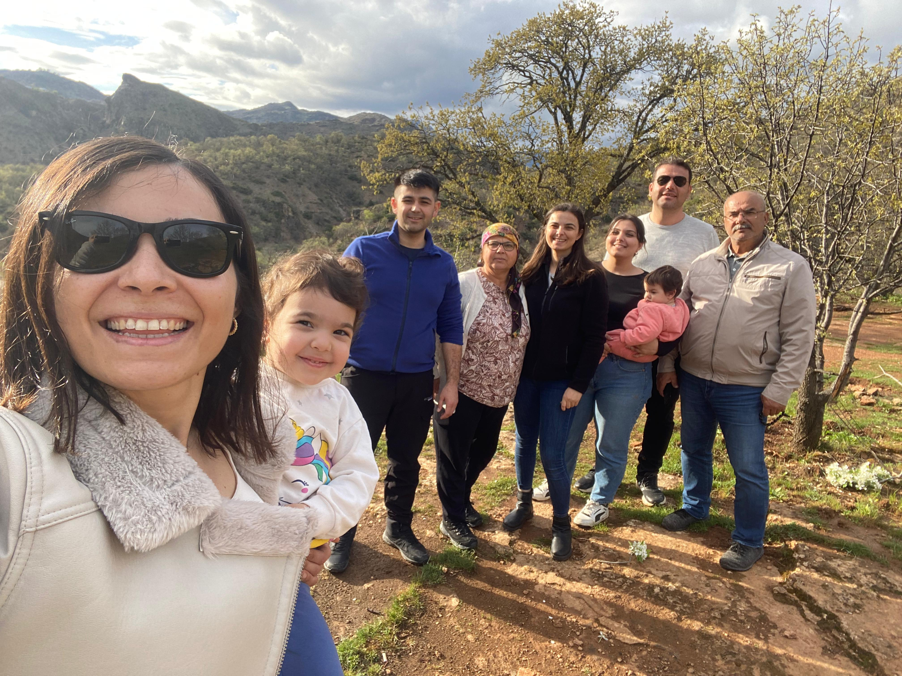
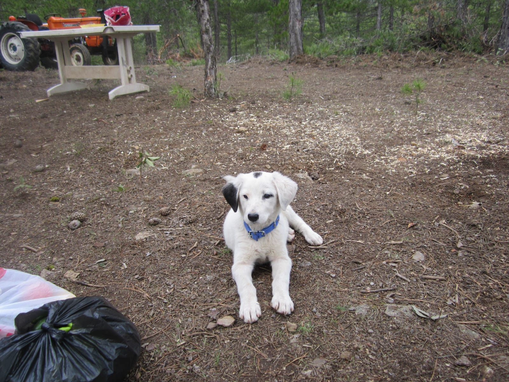

Babamın adı Sani, annemin adı Döndü’dür. Babam emekli, Annem’de ev hanımıdır. Babam uzun yıllar Mersin Büyükşehir Belediyesinde çalıştıktan sonra emekli oldu.İki tane ablam var .Bir tanesi fizyoterapist diğeri ise Polis .İki ablamın da bir tane çocuğu var.Artık ablalarımla aynı şehirde yaşamıyoruz.
Oturduğumuz mahallede olan Kökobası İlk ve Ortaokulunda Anasınıfına başladım .Ablalarımın da okuduğu bu okulda ilerleyen yıllarda ilköğretimimi tamamladım. Lisenin ilk 3 yılını (hazırlık,9 ve 10. sınıflar olmak üzere ) Adana'da Bahtiyar Vahabzade Sosyal Bilimler Lisesinde okudum.Sonra sayısal bölüm seçmek istediğimi anlayıp Mersin'de bir özel liseye geçiş yaptım . Lise eğitimimi tamamladıktan sonra ise Sakarya Üniversitesi Bilgisayar Mühendisliği bölümünü kazandım ve şu an 1. sınıfım .
Babamın neredeyse bütün spor dallarını takip etmesi sonucu briçok spor dallarını yakından takip etmeye başladım. Voleybol,futbol,basketbol ,motorsporları... 2018 de sevdiğim basketbolcuların Nba'a gitmesi sonu Nba 'i yakından takip etmeye başladım.Bogdanovic,Luka Doncic,Trae Young vb. Basketbola merakım yıllar içersinde azalmaya basladı .F1 de ise 2020 de İstanbul GP nin gerçekleştirilmesi sonucu talip etmeye başladım . Spor dışında tarih kitapları okumayı severim. Müzik dinlemek diğer hobilerim arasındadır.